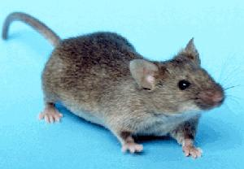

Меньше ешь!
Меньше ешь - дольше живёшь
2013-08-16
Уже давно в опытах на мышах доказана выгода малокалорийной диеты. На такой диете мыши живут чуть не в два раза дольше, чем те, которые ни в чём себе не отказывают. Однако пока никто ясно не понимает, почему так получается.
В NewScientists появился обзор ещё одной статьи о мышах Structural modulation of gut microbiota in life-long calorie-restricted mice, в которой авторы нашли одну из причин долголетия голодных мышей.

Оказывается среди бактерий, которые живут в кишечнике, есть безобидные, полезные и вредные. Градацию можно уточнять. Например Lactobacillus - полезные. Они способствуют улучшению здоровья и продлению жизни. И вот оказалось, что у мышей на низкокалорийной диете количество полезных бактерий в животе было больше, а вредных меньше.
Эволюционно это можно объяснить тем, что в течение тысяч лет нормальным состоянием человека был голод. Для такого состояния природа подобрала наиболее полезную фауну кишечника.
Переедая, мы нарушаем тысячелетнюю стабильность, в том числе подкармливаем посторонних микробов, положительное влияние которых на здоровье не гарантировано - не проверено эволюцией путём тысячелетнего естественного отбора. А когда мы едим в меру, в животе разводятся такие микробы, для которых наша умеренность означает их комфорт. Если им хорошо, то и нам хорошо - вот что такое эволюция.